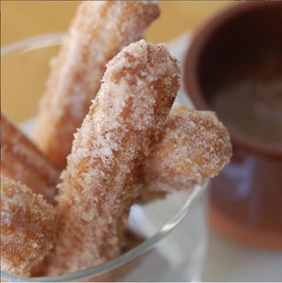

Churros

Why churros should be apart of your daily diet
What can be said about churros that hasn't been said before? These hot,warm,sometimes gooey dough sticks are exactly what every person needs to brighten their day. Churros are said to possess unearthly powers when wielded by those deemed worthy. It is even rumored that moses used a 6ft long churro in order to part the red sea for his people to escape persecution. Anyway, enjoy shoving your face with these definitely not phallic dough sticks.
Ingreients
- 1 cup water
- 2 1/2 tbs white sugar
- 1/2 tsp salt
- 2 tablespoons vegetable oil
- 1 cup all purpose flour
- 2 quarts oil for frying
- 1/2 cup white sugar or to taste
- 1 tsp ground cinnamon
Directions
- In a small saucepan over medium heat, combine water, 2 1/2 tablespoons sugar, salt and 2 tablespoons vegetable oil. Bring to a boil and remove from heat. Stir in flour until mixture forms a ball.
- Heat oil for frying in a deep fryer or deep pot to 375 degrees F (190 degrees C). Pipe 5- to 6-inch strips of dough into the hot oil using a sturdy pastry bag fitted with a medium star tip. Do not overcrowd the oil. Fry until golden; drain on paper towels.
- Combine 1/2 cup sugar and cinnamon. Roll drained churros in cinnamon and sugar mixture.
Home Page